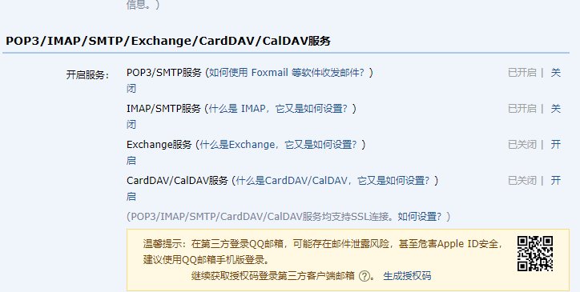

邮件通知
本章节我们将 话题有新回复 通知新增 邮件通知频道, 当话题被回复时, 作者可以收到一份 email 邮件通知, laravel 的通知系统默认支持邮件频道的通知方式, 我们只要稍作配置即可
laravel 支持多种邮件驱动, 包括 smtp. Mailgun,mail和sendmail, Mailgun, Amazon SES, Maildrill
都是第三方邮件服务, mail驱动使用 php 提供的 mail 函数, sendmail 驱动通过 Sendmai/Postfix (Linux) 提供的命令发送邮件, smtp 驱动支持 ESMTP 的 SMTP 服务器发送邮件, mail 不安全, sendmail 需要配置 Sendmail/Postfix, 并且信用不高, 很容易被当成垃圾邮件, 第三方服务的信用是最高的, 商业软件推荐使用.
本章节以 QQ邮件为例, 我们将开启 QQ 的 SMTP 功能, 并配置项目的 SMTP 邮件发送功能, 其他邮件的配置大体相同.
1.开启 QQ 邮箱的 SMTP 支持
首先我们需要早 QQ 邮箱的账号设置里面开启 POP3 和 SMTP 服务


授权码将作为我们的密码进行使用
2.邮件发送配置
laravel 中邮箱发送的配置存放于 config/mail.php 中, 不过 mail.php 中我们所需的配置, 都可以通过 .env 来配置, 作为最佳实践, 我们优先选择通过环境变量来配置
.env
.
.
.
MAIL_DRIVER=smtp
MAIL_HOST=smtp.qq.com
MAIL_PORT=25
MAIL_USERNAME=xxxxxxxxxxxxxx@qq.com
MAIL_PASSWORD=xxxxxxxxx
MAIL_ENCRYPTION=tls
MAIL_FROM_ADDRESS=xxxxxxxxxxxxxx@qq.com
MAIL_FROM_NAME=SampleApp
.
.
.
选项讲解
- 使用支持 ESMTP 的 SMTP 服务器发送邮件
- QQ 邮箱的 SMTP 服务器地址, 必须为此至此值
- QQ 邮箱的 SMTP 服务器端口, 必须为此值
- username 不解释
- 密码就是我们的授权码
- tls 是我们的加密类型, 其它选项还有 ssl
- 传送地址, 和 用户名一致, 不解释
- 用来作为邮件的发送者名称
历史遗留问题
还记得账户激活章节的邮件激活逻辑吗?现在我们已经在配置环境中完善了邮件的发送配置, 因此不再需要使用 from 方法
app/Http/Controllers/UsersController.php
<?php
.
.
.
class UsersController extends Controller
{
.
.
.
protected function sendEmailConfirmationTo($user)
{
$view = 'emails.confirm';
$data = compact('user');
$to = $user->email;
$subject = "感谢注册 Sample 应用！请确认你的邮箱。";
Mail::send($view, $data, function ($message) use ($to, $subject) {
$message->to($to)->subject($subject);
});
}
}
一切完成后我们进行代码提交, 本行内容大致结束
$ git add -A
$ git commit -m "Add password resets $ email configuration"
$ git checkout master
$ git merge account-activation-password-resets
$ git push